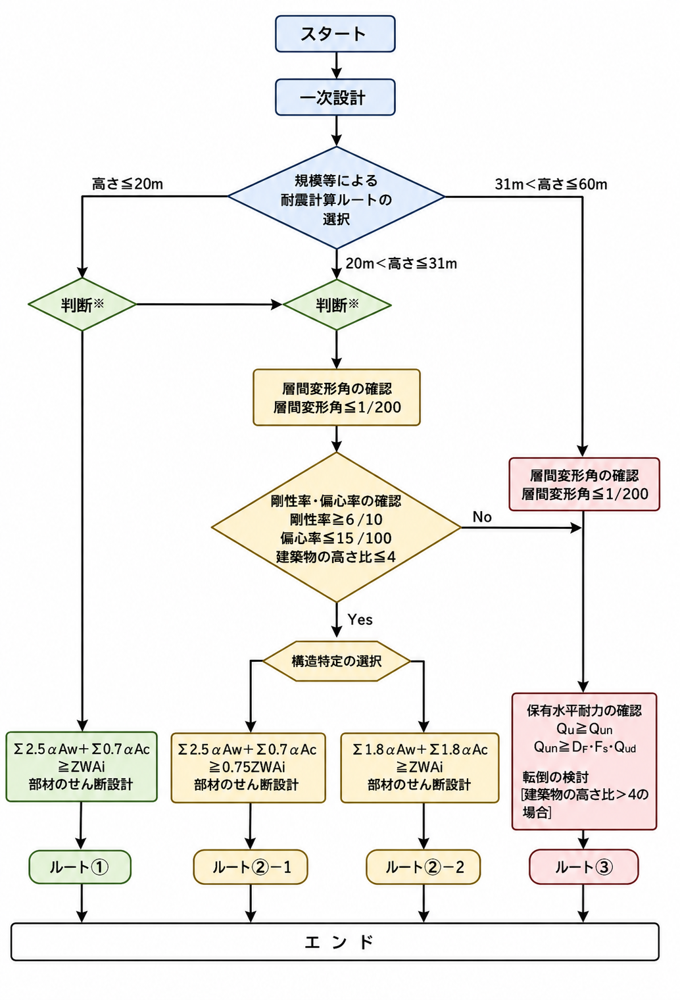

RC造の構造計算ルートとは？ルート1・2・3の違いと判定をわかりやすく解説
鉄筋コンクリート造（RC造）の構造設計では、建物の規模や特性に応じて「構造計算ルート」を選びます。ルート1・2・3のどれを通すかで、必要な検討項目・計算量・構造計算適合性判定の要否が変わります。この記事では、各ルートの違い・選び方・判定の流れを、はじめての方にもわかるように図解で丁寧に解説します。記事末では、計算書に使えるRC造の設計ルート判定Excelを無料ダウンロードできます。
- 構造計算ルートとは、大地震に対する安全性をどう確認するかの手順の選択肢。RC造はルート1・2・3。
- ルートが上がる（1→3）ほど検討は厳密になり、適用できる建物の規模も大きくなる。
- ルート3は構造計算適合性判定（構適判）が必要。ルート2も一定条件で必要、ルート1は不要。
構造計算ルートとは？（一次設計と二次設計）
建築物の構造計算は、大きく2段階で安全性を確かめます。
- 一次設計（許容応力度計算）…数十年に一度程度の「中地震」に対し、部材の応力が許容応力度以内で、建物が損傷しないことを確認する。
- 二次設計（大地震に対する検討）…数百年に一度級の「大地震」に対し、建物が倒壊・崩壊しないことを確認する。
この二次設計を“どの方法で”確認するかの違いが、ルート1・2・3です。ルートが上がるほど、地震時の挙動をより直接的・厳密に検証します。
RC造の設計ルート全体像（ルート1・2・3）
RC造の構造計算ルートは、二次設計の確認方法によって次の3つに分かれます。まずは全体像をつかみましょう。

| ルート | 二次設計の確認方法 | 適用の目安 | 構適判 |
|---|---|---|---|
| ルート1 | 壁量・柱量の確保で代替 | 小規模・低層の建物 | 不要 |
| ルート2 | 剛性率・偏心率・層間変形角＋靭性確保 | 中規模の建物 | 一部必要 |
| ルート3 | 保有水平耐力計算 | 規模・高さの大きい建物 | 必要 |
※ 具体的な高さ・階数などの適用条件は「各ルートの比較表」と「法的根拠」を参照してください。高さ60mを超える建物は時刻歴応答解析（大臣認定ルート）になります。
ルート1｜許容応力度計算＋壁量・柱量の確保
小規模な建物で使える、もっとも簡便なルートです。許容応力度計算（一次設計）に加えて、各階に十分な耐力壁・柱の断面積を確保することで、保有水平耐力計算などの二次設計を省略します。
考え方はシンプルで、壁・柱が十分にあれば、大地震時の地震力も弾性的に受け止められるとみなすものです。代表的な確認式（イメージ）は次のとおりです。
ここで Aw＝耐力壁の水平断面積、Ac＝柱の水平断面積、Z＝地域係数、W＝重量、Ai＝高さ方向の分布係数です（係数はコンクリート強度などにより告示で規定されます）。
- メリット：計算が簡便で、構造計算適合性判定が不要。
- デメリット：壁量・柱量の制約が厳しく、大きな建物や開放的なプランには不向き。
ルート2｜剛性率・偏心率・層間変形角の確認
中規模の建物向けのルートです。許容応力度計算に加えて、建物のバランスと変形を確認します。
- 層間変形角 ≦ 1/200…地震時の各階の変形が過大でないことを確認する。
- 剛性率 ≧ 0.6…高さ方向で硬さが極端に偏っていないこと（特定階への損傷集中を防ぐ）。
- 偏心率 ≦ 0.15…平面的に剛性が偏っていないこと（ねじれ破壊を防ぐ）。
あわせて、柱・梁・耐力壁のせん断破壊を防ぐ靭性確保（せん断設計）を行います。ルート2は構造形式によりルート2-1・2-2・2-3などに細分されます。
ルート3｜保有水平耐力計算
規模・高さの大きい建物や、ルート1・2の条件を満たさない場合に用いるルートです。大地震に対する建物の粘り（保有水平耐力）を直接計算して確かめます。
ここで Qu＝保有水平耐力、Ds＝構造特性係数（靭性が高いほど小さくできる）、Fes＝形状係数（剛性率・偏心率に応じた割増）、Qud＝大地震時の地震層せん断力です。崩壊メカニズムを想定し、各部材が脆性破壊せず粘り強く壊れる（曲げ降伏先行・せん断破壊回避）ように設計します。もっとも自由度が高い反面、検討は大規模で、構造計算適合性判定が必要です。
ルートの選び方と判定の流れ
- まず建物の高さ・階数・形状で、適用可能なルートを絞り込む。
- 小規模で壁量が確保できる → ルート1。バランス確認で成立 → ルート2。それ以外・大規模 → ルート3。
- ルート3は構造計算適合性判定の対象。ルート2も一定条件で対象、ルート1は対象外（ただし許容応力度計算は必須）。
- 材料選定の考え方（梁断面を小さくしたいなら高強度鉄筋、柱断面を小さくしたいなら高強度コンクリート）ともあわせて検討します（→「RC造とは？」「鉄筋の種類」）。
各ルートの比較表
ルート1・2・3の違いを一覧で整理すると次のとおりです。
| 項目 | ルート1 | ルート2 | ルート3 |
|---|---|---|---|
| 計算内容 | 仕様規定のみ | 許容応力度＋剛性率・偏心率 | ルート2＋保有水平耐力 |
| 高さ制限 | 13m以下（目安） | 31m以下 | 制限なし（60m超は別途） |
| 構造計算適合性判定 | 不要 | 不要（一部必要） | 必要 |
| 計算の複雑さ | 低 | 中 | 高 |
| 設計の自由度 | 低 | 中 | 高 |
| 実務での使用頻度 | 低 | 高（最多） | 中 |
実務での注意点とよくある質問
Q1. ルート2とルート3、どちらを選ぶべきか？
原則はルート2での設計を目指すことを推奨します。ルート2はルート3に比べて計算量が少なく、構造計算適合性判定（いわゆる「構適判」）が不要なケースが多いためです。ただし、平面・立面に形状的な不整形がある場合はルート3が必要になります。
Q2. 構造計算適合性判定（構適判）はどのルートで必要？
原則としてルート3（保有水平耐力計算）以上の計算を行う場合に、構造計算適合性判定機関による審査が必要です。ルート2でも、高さ20mを超えるRC造など一定の条件で必要となります。
Q3. 剛性率・偏心率がNGになった場合は？
以下の対応策が考えられます。
- 耐震壁の追加・移動によるバランス改善
- 柱・梁断面の見直し
- ルート3への移行（形状係数 Fes を用いて保有水平耐力で確認する）
Q4. 免震構造の場合はどのルートになる？
免震構造は通常の設計ルートとは別に、大臣認定に基づく特別な計算方法が適用されます。限界耐力計算または時刻歴応答解析との組み合わせが一般的です。
法的根拠
RC造の構造計算ルートの根拠となる主な法令・基準は次のとおりです。
| 根拠法令 | 条項 |
|---|---|
| 建築基準法施行令 | 第81条 |
| 国土交通省告示 | 第593号（平成19年） |
| 建築物の構造関係技術基準解説書（黄色本） | 最新版参照 |
本記事はアフィリエイト広告（楽天ブックス）を含みます。価格・版（エディション）は変動するため、最新情報は販売サイトでご確認ください。

設計ルート判定Excelの無料ダウンロード
RC造 設計ルート判定Excel
建物条件を入力すると、適用できる構造計算ルートの判定に使えるシートです。計算書の添付資料としてもご活用いただけます。
※ Microsoft Excel（.xlsx）。判定結果は設計者ご自身の責任でご確認のうえご使用ください。
本記事とExcelは、RC造の構造計算ルートの考え方を理解するための解説資料です。実際の設計では、採用する基準（建築基準法施行令・関連告示・建築物の構造関係技術基準解説書ほか）や条件に応じた確認が必要です。計算結果は設計者ご自身の責任でご確認のうえご使用ください。
まとめ
- RC造の構造計算ルートは1・2・3で、二次設計（大地震への確認）の方法が違う。
- ルート1＝壁量・柱量で代替／ルート2＝剛性率・偏心率・層間変形角／ルート3＝保有水平耐力計算。
- 実務ではルート2が最多。形状の不整形などがあればルート3へ。
- ルート3は構適判が必要、ルート2も一定条件で必要。規模・高さ・形状でルートを選ぶ。
基礎は「鉄筋コンクリート造（RC造）とは？」、計算の前提は「許容応力度計算とは？」「地震力の計算方法」、超高層は「超高層建築物と時刻歴応答解析」をどうぞ。